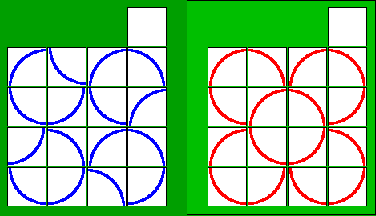
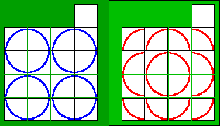
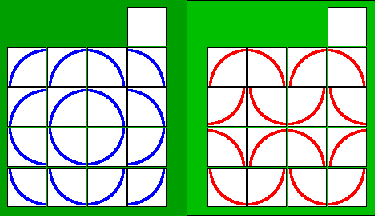

今年も残りわずかとなりました。M.Hiroi's Home Page を開設してから４年半になりますが、おかげさまでカウンタも 150,000 を突破いたしました。リンクしていただいているホームページ管理者の皆様、そして、なによりも M.Hiroi's Home Page に来てくださる皆様にお礼申しあげます。来年もこのページでプログラミングの楽しさを少しでもお伝えできればいいなと思っています。来年もよろしくお願い申しあげます。
それでは、きたるべき年も皆様にとってよいお年でありますように。
本日、カウンタが 150,000 を突破しました。多くの方にアクセスしていただき、とても嬉しく思います。リンクしていただいているホームページ管理者の皆様、そして、なによりも M.Hiroi's Home Page に来てくださる皆様に厚くお礼申し上げます。
新ジオシティーズに移行して、もうすぐ三ヶ月になります。その間に URL 転送サービスや容量が 50 MB に増えるなど、ジオシティーズのサービスは良くなっているのですが、M.Hiroi's Home Page のアクセス数は減少傾向にあります。去年の 11 月はアクセス数が多く一日平均 126 Hit ありましたが、今年は 102 Hit になりました。まあ、去年に比べると更新回数が少ないので、アクセス数が減少するのは当然ですが、もうひとつ Google のランクも影響しているようです。
M.Hiroi's Home Page は二つの URL (旧 URL http://www.geocities.co.jp/SiliconValley-Oakland/1680/, 新 URL http://www.geocities.jp/m_hiroi/) のどちらでもアクセスすることができます。どちらも同じページなのですが、Google は別のページとして判断しているようです。現在、M.Hiroi's Home Page へのリンクに新 URL が使われているページもありますし、旧 URL が使われているページもあります。Google は新旧 URL を別のページとして扱っているため、今までのランクが二分されてしまい、M.Hiroi's Home Page のランクが低くなったと思われます。
新旧二つの URL でアクセスできるのは便利ですが、Google のランクに影響するとは思ってもいませんでした。今のところ、旧 URL を廃止して新 URL に統一するつもりはありませんが、よろしければ新 URL でリンクしていただけると助かります。
それでは、これからもがんばりますので、よろしくお願い申しあげます。
11 月 5 日 の続きです。LZMA は LZ77 符号に変更を加えた符号化方式です。LZ77 符号は「辞書に基づく符号化方式」のひとつで、「辞書（スライド窓）」の大きさによって圧縮率が大きく変化します。LZ77 符号 (LZSS 符号) は拙作のＣ言語講座 第 22 回 で詳しく説明しています。興味のある方はお読みくださいませ。
LZMA の場合、スライド窓の大きさはデフォルトで 8 M byte に設定されています。この大きさには M.Hiroi も驚きました。LHA の場合、圧縮形式によってスライド窓の大きさが変わり、lh5 = 8 K byte, lh6 = 32 K byte, lh7 = 64 K byte になります。M.Hiroi は標準的な lh5 形式を使っています。
LZMA はオプション -d でスライド窓の大きさを変更することができます。そこで、スライド窓の大きさを変えて試してみました。Canterbury Corpus で配布されているテストデータ The Canterbury Corpus, それを tar でまとめたファイル Canterbury と The Large Corpusを圧縮してみましょう。ご参考までに、LHA (lh5) の結果も示します。
| ファイル名 | サイズ | 8 M | 64 K | 32 K | 8 K | lh5(8K) |
|---|---|---|---|---|---|---|
| alice29.txt | 152,089 | 48,447 | 49,171 | 50,887 | 56,072 | 59,117 |
| asyoulik.txt | 125,179 | 44,503 | 44,870 | 45,979 | 49,773 | 52,341 |
| cp.html | 24,603 | 7,591 | 7,591 | 7,591 | 8,011 | 8,384 |
| fields.c | 11,150 | 2,976 | 2,976 | 2,976 | 2,979 | 3,170 |
| grammar.lsp | 3,721 | 1,241 | 1,241 | 1,241 | 1,241 | 1,271 |
| kennedy.xls | 1,029,744 | 52,387 | 52,060 | 49,016 | 52,294 | 198,342 |
| lcet10.txt | 426,754 | 119,366 | 128,688 | 134,918 | 150,645 | 159,558 |
| plrabn12.txt | 481,861 | 165,324 | 175,575 | 182,443 | 198,867 | 210,045 |
| ptt5 | 513,216 | 40,920 | 40,719 | 40,631 | 40,442 | 52,305 |
| sum | 38,240 | 9,499 | 9,499 | 9,499 | 10,694 | 13,993 |
| xargs.1 | 4,227 | 1,762 | 1,762 | 1,762 | 1,762 | 1,778 |
| 合計 | 2,810,784 | 494,016 | 514,152 | 526,943 | 572,780 | 760,304 |
| ファイル名 | サイズ | 8 M | 64 K | 32 K | 8 K | lh5(8K) |
|---|---|---|---|---|---|---|
| bible.txt | 4,047,392 | 885,207 | 1,034,507 | 1,091,103 | 1,225,591 | 1,310,048 |
| Canterbury | 2,821,120 | 484,946 | 507,928 | 528,024 | 568,232 | 761,838 |
| e.coli | 4,638,690 | 1,186,340 | 1,226,041 | 1,234,356 | 1,247,879 | 1,322,746 |
| world192.txt | 2,473,400 | 484,877 | 603,259 | 652,649 | 913,700 | 991,922 |
| 合計 | 13,980,602 | 3,041,370 | 3,371,735 | 3,506,132 | 3,955,402 | 4,386,554 |
LZMA の場合、スライド窓を大きくするとテキストファイルの圧縮率が高くなります。LHA (lh5) と同じ 8 K byte に設定すると圧縮率は悪くなりますが、それでも LHA より高い圧縮利を叩き出しています。また、kennedy.xls, ptt5, sum などのバイナリファイルは、スライド窓の大きさにかかわらず高い圧縮率を達成しています。
LZ77 符号の場合、スライド窓を大きくすると圧縮率は確かに向上します。そうはいっても、簡単に圧縮率が向上するわけではありません、スライド窓の大きさはもろ刃の剣で、大きくしすぎると圧縮率を低下させる要因にもなるのです。ここまでスライド窓を大きくしても高い圧縮率を叩き出す LZMA には本当に驚きました。LZMA はとても優れた圧縮方式だと思います。
Yahoo! ジオシティーズのホームページ容量が 50 MB に増量されました。現在、M.Hiroi's Home Page のコンテンツは全部で約 11 MB あり、旧ジオシティーズ (容量 12 MB) では容量が残り僅かになっていました。新ジオシティーズ (容量 15 MB) へ移行して一息ついたのですが、今回の大幅な増量により、当分の間は容量を気にしなくてもよさそうです。
ということで、Perl/Tk memo に 神経衰弱ゲーム と アナログ時計 を追加しました。拙作のページ Tcl/Tk お気楽 GUI プログラミング応用編 のプログラムを Perl/Tk で書き直しただけですが、Perl/Tk に興味のある方は読んでみてください。
TAU さん の X680x0 用ゲーム『Coffee Cups Complex』がバージョンアップ (Ver 0.10) されました。Ver 0.10 では新しい stage が追加され、手数のカウント方式を切り替えることができます。パズルが好きな X680x0 ユーザーはぜひ遊んでみてください。
11 月 13 日 の続きです。大地さんのプログラムに EOF を表す記号 (256) を追加し、適応型レンジコーダ のプログラムを二分探索に改造してみました。次のリストを見てください。
リスト：二分探索で記号を探す
int search_code0( Frequency *freq, Ushort value )
{
int i = 0, j = CODE_SIZE - 1;
Ushort *count_sum = freq->count_sum;
while( i < j ){
int k = (i + j) / 2;
if( count_sum[k + 1] <= value ){
i = k + 1;
} else {
j = k;
}
}
return i;
}
int search_code1( Frequency *freq, Ushort value )
{
int c = 0, j;
Ushort *count_sum = freq->count_sum;
for (j=128; j; j>>=1) c += (count_sum[c + j] <= value) ? j : 0;
/* EOF code のチェック */
if( c == 255 && count_sum[c + 1] <= value ) c++;
return c;
}
int search_code2( Frequency *freq, Ushort value )
{
int c = 0, j;
Ushort *count_sum = freq->count_sum;
for (j=64; j; j>>=2) {
if (count_sum[c+j] <= value) c += j;
else continue;
if (count_sum[c+j] <= value) c += j;
else continue;
if (count_sum[c+j] <= value) c += j;
}
/* EOF code のチェック */
if( c == 255 && count_sum[c + 1] <= value ) c++;
return c;
}
関数 search_code0 がレンジコーダ用の二分探索です。CODE_SIZE は記号の種類を表すマクロで、EOF (256) を含めて 257 になります。関数 search_code1 と search_code2 が大地さんのプログラムを改造したもので、復号した記号が 255 の場合に EOF のチェックを追加しています。このような改造では、せっかくの高速性が台無しになるかもしれません。興味のある方は他の方法を考えてみてください。
それでは実行結果を示します。テストデータは Canterbury Corpus で配布されている The Canterbury Corpus の中から alice29.txt, kennedy.xls, plrabn12.txt, ptt5 の 4 ファイルと The Large Corpus の bible.txt です。プログラムは Borland C++ 5.5.1 for Win32 でコンパイルし、M.Hiroi のオンボロマシン (Windows95, Pentium 166 MHz) で実行しました。時間はファイルの入出力処理を含むプログラム全体の処理時間です。
| ファイル名 | サイズ | code0 | code1 | code2 |
|---|---|---|---|---|
| alice29.txt | 152,089 | 1,944 | 1,919 | 1,890 |
| plrabn12.txt | 481,861 | 5,013 | 4,999 | 4,952 |
| kennedy.xls | 1,029,744 | 12,556 | 12,652 | 12,444 |
| ptt5 | 513,216 | 6,406 | 6,432 | 6,338 |
| bible.txt | 4,047,392 | 38,237 | 38,009 | 37,549 |
さすがに二分探索は高速で、どの関数でも十分に速いのですが、その中で search_code2 が一番高速になりました。なるほど、確かに効果がありますね。大地さんに感謝です。記号に EOF (256) を含めずに、大地さんのプログラムをそのまま使うと、もう少し速くなると思われます。興味のある方は試してみてください。
昨日、Guest Book で大地さんが投稿された「高速化アルゴリズム」ですが、ジオシティーズのゲストブックに問題があり、プログラムリストのほとんどが掲載されていませんでした。さっそく、大地さんからメールで投稿内容をお送りいただきました。大地さん、ありがとうございます。
大地さんの投稿内容は、レンジコーダのデコード部で使用する記号の探索処理についてです。記号の探索処理は、記号数が多くなると線形探索よりも二分探索を使った方が高速です。大地さんはレンジコーダ用の高速な二分探索（バイナリサーチ）を提案されています。大地さんのメールから転載します。
---------- 以下は大地さんのメールから転載 ----------
まずバイナリサーチからいきますと以下のようになります。
int c = 0, j;
for (j=128; j; j>>=1) c += (sum[c+j] <= tmp1) ? j : 0;
if 文を使わずに三項演算子を使って高速化しているのがポイントです。当然ですがバイナリサーチですのでシンボルの数が 256 であれば比較回数は常に 8 回となります。ランダムデータであればおそらくこれが最速なのですが、実際のデータは頻度の偏りが大きい事が多く、0 ばかりが出現するような場合はリニアサーチでも良い事もあります。そこでリニアとバイナリを組み合わせたハイブリッドサーチを作りました。
[Hybrid Search]
int c = 0, j;
for (j=64; j; j>>=2) {
if (sum[c+j] <= tmp1) c += j;
else continue;
if (sum[c+j] <= tmp1) c += j;
else continue;
if (sum[c+j] <= tmp1) c += j;
}
調べるべき範囲を 4 分割してリニアサーチをかけます。比較回数は最短で 4 回、最長で 12 回となります。ランダムデータであれば当然バイナリサーチに負けてしまいますが、英文などのような偏ったデータの場合は多くの場合高速化されます。お試しあれ。
---------- ここまで ----------
なるほど、これはとても面白いアイデアだと思います。M.Hiroi も試してみたいと思います。ただし、大地さんのプログラムでは、記号は 256 種類 (0 - 255) までなので、EOF (たとえば 256) を含める場合はプログラムを改造する必要があります。ご注意ください。興味のある方は、ぜひ試してみてください。
データ圧縮のお話です。最近、M.Hiroi は LZSS 符号の改良に関心を持っていて、いろいろ調べているうちに 7-ZIP という圧縮ツールに行き着きました。7-ZIP の作者は Igor Pavlov です。7-ZIP はいくつかの圧縮方式をサポートしていて、その中でデフォルトで使用される LZMA という圧縮方式が LZ77 符号をベースにしています。LZMA はアプリケーションに組み込むことも考えられていて、ソースファイルやドキュメントなど必要なものは LZMA SDK からダウンロードすることができます。
LZMA SDK には実行形式ファイル lzma.exe が含まれているので、さっそく試してみることにしました。Canterbury Corpus で配布されているテストデータ The Canterbury Corpus を圧縮してみましょう。ご参考までに、LHA, bzip2, bsrc2 [1] の結果も示します。bzip2 と bsrc2 はブロックソートを用いた圧縮ツールです。LZMA の設定はデフォルトのままです。
| ファイル名 | サイズ | LZMA | LHA | bzip2 | bsrc2 |
|---|---|---|---|---|---|
| alice29.txt | 152,089 | 48,447 | 59,117 | 43,202 | 41,420 |
| asyoulik.txt | 125,179 | 44,503 | 52,341 | 39,569 | 38,308 |
| cp.html | 24,603 | 7,591 | 8,384 | 7,624 | 7,404 |
| fields.c | 11,150 | 2,976 | 3,170 | 3,039 | 2,918 |
| grammar.lsp | 3,721 | 1,241 | 1,271 | 1,283 | 1,192 |
| kennedy.xls | 1,029,744 | 52,387 | 198,342 | 130,280 | 88,329 |
| lcet10.txt | 426,754 | 119,366 | 159,558 | 107,706 | 103,052 |
| plrabn12.txt | 481,861 | 165,324 | 210,045 | 145,577 | 139,826 |
| ptt5 | 513,216 | 40,920 | 52,305 | 49,759 | 47,293 |
| sum | 38,240 | 9,499 | 13,993 | 12,909 | 12,123 |
| xargs.1 | 4,227 | 1,762 | 1,778 | 1,762 | 1,657 |
| 合計 | 2,810,784 | 494,016 | 760,304 | 542,710 | 483,522 |
LZMA は LHA を大きく上回る圧縮率を叩き出しています。テキストファイルでは bzip2 の圧縮率には及ばないものの、kennedy.xls, ptt5, sum では bzip2 と bsrc2 を上回る圧縮率になりました。特に kennedy.xls の圧縮率がとても高いので、合計値では bzip2 を上回る圧縮率になりました。
今度は、The Canterbury Corpus (11 ファイル) を tar でまとめたファイル Canterbury と The Large Corpus を圧縮してみました。ブロックソートの圧縮率はバッファサイズによって大きく変化します。bzip2 のバッファサイズは最大の 900 k byte に、bsrc2 のバッファサイズは 4 M byte に設定しました。
| ファイル名 | サイズ | LZMA | LHA | bzip2 | bsrc2 |
|---|---|---|---|---|---|
| bible.txt | 4,047,392 | 885,207 | 1,310,048 | 845,623 | 759,499 |
| Canterbury | 2,821,120 | 484,946 | 761,838 | 568,468 | 499,871 |
| e.coli | 4,638,690 | 1,186,340 | 1,322,746 | 1,251,004 | 1,153,779 |
| world192.txt | 2,473,400 | 484,877 | 991,922 | 489,583 | 412,714 |
| 合計 | 13,980,602 | 3,041,370 | 4,386,554 | 3,154,678 | 2,825,863 |
LZMA の圧縮率はとても高く、もはや LHA とは比較になりませんね。bible.txt 以外のファイルでは bzip2 を上回る高い圧縮率になりました。LZ77 符号をベースにした圧縮ツールで、ブロックソートに匹敵する高い圧縮率を叩き出すとは、本当に驚きました。そのかわり、圧縮処理には時間がかかるようです。興味のある方は、いろいろなファイルで試してみてください。
このたびの新潟県中越地震では、皆さまよりお見舞いをいただき、誠にありがとうございました。とても大きな揺れで生きた心地がしなかったのですが、幸いにもわが家ではたいした被害もなくすみましたので、ご安心くださいませ。今回の地震は余震活動が活発で、いつまた大きな余震がくるか不安だったのですが、ようやくおちついて後始末もできるようになりました。
余震活動は収まりつつありますが、いまだに多くの方々が避難生活を余儀なくされています。各地の被災者の皆さまに心からお見舞いを申しあげます。
10 月 19 日 の続きです。変形版・ライツアウト 4 行 5 列盤の最長手数を幅優先探索で求めてみました。
1手のパターン数 20 2手のパターン数 190 3手のパターン数 1140 4手のパターン数 4845 5手のパターン数 14751 6手のパターン数 30500 7手のパターン数 39625 8手のパターン数 30000 9手のパターン数 10000 合計 131072 個
最長手数は 9 手になりました。局面の総数はライトがすべて消えている完成形も含めて全部で 131072 通りになりました。局面の総数は 5 行 5 列盤とたまたま同じになりましたが、最長手数は 1 手長くなりました。
Yahoo! ジオシティーズが旧ジオシティーズから新ジオシティーズへの「URL 転送サービス」を始めました。詳しくは Yahoo! ジオシティーズのヘルプ 旧ジオシティーズから新ジオシティーズへURL転送したい をお読みください。
本日、URL の転送設定を行いましたので、旧 URL (http://www.geocities.co.jp/SiliconValley-Oakland/1680/) のアクセスは新 URL (http://www.geocities.jp/m_hiroi/) へ転送されます。これにともない、トップページにあったジオシティーズのカウンタを復活させました。
実は、ジオシティーズの 助け合い広場 で、このサービスが準備されていることは知っていたのですが、いつのまにか開始されていたのでちょっと驚きました。このような重要なサービスは「ヘルプ」に追加するだけではなく、トップページ とか お知らせ できちんと説明してもらいたいと思います。
まあ、このほかにも 10 月下旬からは容量が 50 MB に増えるなど、ジオシティーズもがんばっているようなので、M.Hiroi's Home Page はこのまま続けていこうと思っています。これからもよろしくお願いいたします。
10 月 15 日 の続きです。変形版・ライツアウト 5 行 5 列盤の最長手数を幅優先探索で求めてみました。
1手のパターン数 25 2手のパターン数 300 3手のパターン数 2300 4手のパターン数 11775 5手のパターン数 36571 6手のパターン数 51540 7手のパターン数 26640 8手のパターン数 1920 合計 131072 通り
最長手数は 8 手になりました。局面の総数はライトがすべて消えている完成形も含めて全部で 131072 通りになりました。ライツアウトよりも局面の総数が少なくて最長手数が短いという結果になりました。
ちなみに 4 行 4 列盤の場合、局面の総数は 65536 通りになるので、ライトがどんな点灯パターンでも解くことができます。それでは、盤を 4 行 5 列にするとどうなるのでしょうか。興味のある方は調べてみてください。
10 月 10 日 に出題した「変形版・ライツアウト(2)」の解答です。
[問題] [解答]
■■■■ □□□□ ●●●●
■■■■ ─→ □□□□ ●●●●
■■■■ □□□□ ●●●●
■■■■ □□□□ ●●●●
START GOAL ●：押すボタン
図：変形版ライツアウト(2)
最短手数は 16 手、つまり全部のボタンを押さないと解くことはできません。これが 4 行 4 列盤での最長手数の局面になります。ちなみに、n 行 n 列盤で全部のボタンを押すと、各ボタンの状態は 2n - 1 回（奇数回）反転することになります。したがって、n が奇数の場合でも、ボタンを全部押すと解くことができます。ただし、前回説明したように、n が奇数の場合は同じ行または列のボタンを n 個押した方が短い手数で解くことができます。
それでは、ここで問題です。5 行 5 列盤の最長手数は何手になるのでしょうか。興味のある方は挑戦してみてください。
10 月 3 日 に出題したパズルの解答です。
[問題] [解答の一例]
■■■■■ □□□□□ ・・・・・
■■■■■ □□□□□ ・・・・・
■■■■■ ─→ □□□□□ ●●●●●
■■■■■ □□□□□ ・・・・・
■■■■■ □□□□□ ・・・・・
ＳＴＡＴＲ ＧＯＡＬ ●：押すボタン
図：変形版ライツアウト
上図に示したように最短手数は 5 手で、同じ行または列のボタン 5 つ押すと、全てのボタンの状態を反転させることができます。
ちなみに、n 行 n 列盤で同じ行または列のボタンを n 個押した場合、押したボタンの状態は n 回反転し、それ以外のボタンは 1 回だけ反転します。押すボタンは同じ行または列にあるので、そのボタンの状態が n 回反転するのは自明ですね。したがって、n が奇数であればボタンの状態が奇数回反転するので、点灯しているボタンを消灯することができます。ほかのボタンは 1 回だけ反転しているので、これで全てのボタンを消灯することができます。
当然ですが、n が偶数の場合はこの方法で解くことはできません。そこで問題です。
[問題]
■■■■ □□□□
■■■■ ─→ □□□□
■■■■ □□□□
■■■■ □□□□
START GOAL
図：変形版ライツアウト(2)
4 行 4 列盤のすべてのボタンが点灯している状態 (START) で、ボタンをすべて消灯する最短手数を求めてください。
それではパズルをお楽しみください。
10 月 5 日より、旧ジオシティーズと拡張版ジオシティーズ（新ジオシティーズ）が統合されました。M.Hiroi's Home Page の移行手続きは無事に終了し、今までの URL http://www.geocities.co.jp/SiliconValley-Oakland/1680/ と新しい URL http://www.geocities.jp/m_hiroi/ のどちらからでもアクセスすることができます。
ただし、トラブルが無いわけではありません。トップページにあるジオシティーズのカウンタが正常に表示されないのです。新 URL からアクセスすると、M.Hiroi が設定したカウンタが表示されるのですが、旧 URL からアクセスすると別のカウンタが表示されます。どうやら、新 URL と旧 URL のアクセスを別々にカウントして表示しているみたいです。まあ、そのうちに修正されると思いますが、とりあえず、いま使っている「スゴいカウンター」を表示することにしました。
カウンタの動作ですが、ジオシティーズの カウンタヘルプ によると、
移行手続き後、旧ジオシティーズと新ジオシティーズのURLを両方とも残した場合、新ジオシティーズのカウンタツールは新ジオシティーズのURLでアクセスされれた方のみカウントされます。
とのことです。ようするに、今の動作が「仕様」だということです。これには M.Hiroi も驚きました。たぶん、旧 URL もずっと使えるのではなく、そのうちに廃止されて新 URL だけになるのでしょう。そうなったら、他の場所へ引っ越ししようかな、と思っています。
パズルのお話です。ライツアウトは「(株)タカラ」から1995年に発売されたパズルゲーム機で、光っているボタンをすべて消すことができればクリアとなります。ライツアウトのルールは拙作のページ ライツアウトの解法 をお読みください。
今回の問題は、ボタンを押したときの反転パターンを変えた「ライツアウト」です。
[反転パターン] [問題]
□□□□□ □□■□□ ■■■■■ □□□□□
□□□□□ □□■□□ ■■■■■ □□□□□
□□□□□ ─→ ■■■■■ ■■■■■ ─→ □□□□□
□□□□□ □□■□□ ■■■■■ □□□□□
□□□□□ □□■□□ ■■■■■ □□□□□
中央のボタンを押した場合 ＳＴＡＴＲ ＧＯＡＬ
図：変形版ライツアウト
今回の問題は上図に示したように、押したボタンと同じ行と列にあるボタンがすべて反転します。すべてのボタンが点灯している状態 (START) で、ボタンをすべて消灯する最短手数を求めてください。
それではパズルをお楽しみください。
ＣＱ出版社 発行の月刊誌 Interface 11 月号 (9/25発売) で、M.Hiroi は「高性能圧縮ツール bsrc の改良 bsrc2（後編）」を執筆しました。後編は三分割法によるブロックソートの高速化と 0-1-2 coding と混合法による圧縮率の改善について解説しています。圧縮アルゴリズムに興味のある方は読んでみてください。
本日、カウンタが 140,000 を突破しました。多くの方にアクセスしていただき、とても嬉しく思います。リンクしていただいているホームページ管理者の皆様、そして、なによりも M.Hiroi's Home Page に来てくださる皆様に厚くお礼申し上げます。最近は xyzzy Lisp のアクセス数が一番多く、次が Ｃ言語講座 で、その次が Perl/Tk になりました。
これからもがんばりますので、よろしくお願い申し上げます。
10 月 5 日より旧ジオシティーズは拡張版ジオシティーズ（新ジオシティーズ）に統合されることになりました。旧ジオシティーズで公開されているページは「移行手続き」を行うことで簡単に新ジオシティーズへ移すことができ、今までの URL (http://www.geocities.co.jp/SiliconValley-Oakland/1680/) でも新ジオシティーズの URL でもページにアクセスすることができるようです。ただし、移行手続きには Yahoo! JAPAN ID が必要になります。
新ジオシティーズへ移行しても、今までの URL でアクセスできるのは大きなメリットだと思っています。M.Hiroi は Yahoo! JAPAN ID を持っているので、今のところ移行手続きを行って M.Hiroi's Home Page を新ジオシティーズへ移す予定です。なお、現在のゲストブックは旧ジオシティーズのもので 10 月 5 日までしか利用できません。新しいゲストブックは新ジオシティーズに移ってから用意する予定です。
しばらくの間、いろいろご迷惑をおかけするかもしれませんが、あしからずご了承くださいませ。
ＣＱ出版社 発行の月刊誌 Interface 10 月号 (8/25発売) で、M.Hiroi は「高性能圧縮ツール bsrc の改良 bsrc2（前編）」を執筆しました。前編はマルチキークイックソートと二段階ソート法によるブロックソートの高速化について解説しています。圧縮アルゴリズムに興味のある方は読んでみてください。
TAU さん が X680x0 用の新作ゲーム『Coffee Cups Complex』を発表されました。ゲームの内容は「回転パズル」です。パズルが好きな X680x0 ユーザーはぜひ遊んでみてください。
8 月 1 日 に出題した「数えて裏返すパズル」の解答です。このパズルはすべての石を裏返すことはできません。最後に白石がひとつ残ることになるので、裏返すことができる石の個数は最大で 8 個になります。実際、このパズルでは 8 個の石を裏返すことができます。手順の一例を示します。
このパズルは 3 番目の石を裏返しにしますが、4 番目の石を裏返しにするとどうなるでしょうか。この場合、6 個の石しか裏返しにすることができません。興味のある方は、ちょっと考えてみてください。
さっそく問題です。
○ ○ 1 <-- 白石を選ぶ
／ ＼ ／ ＼
○ ○ ○ ○ 2
／ ＼ ／ ＼
○ ○ 1 ○ <-- 選ぶ ● 3 3 番目の石を
／ ＼ ／ ＼ 裏返しにする
○───○───○───○ ○───●───○───○
2 3
裏返しにする
図：数えて裏返すパズル
上図のように、リバーシの石（白）を 9 個並べます。適当な白石をひとつ選び、その石から数えて 3 番目の石が白であれば、裏返しにして黒石にします。黒石を裏返しにすることはできません。数える方向は、線に沿って右回りでも左回りでもかまいません。この条件で、できるだけ多くの石を裏返しにしてください。
なお、このパズルは hhase さんの Web サイト あそびをせんとや を参考にさせていただきました。「あそびをせんとや」にはパズルやゲームに関する興味深い情報がたくさんあります。hhase さんに感謝いたします。
それではパズルをお楽しみください。
○ ○ 1 3 ●
／ ＼ ／ ＼ ／ ＼
○ ○ ○ ○ 2 2 ○ ○
／ ＼ ／ ＼ ／ ＼
○ ○ ○ ● 3 1 ○ ●
／ ＼ ／ ＼ ／ ＼
○───○───○───○ ○───○───○───○ ○───○───○───○
● ● ●
／ ＼ ／ ＼ ／ ＼
○ ○ ○ ○ ○ ○ 1
／ ＼ ／ ＼ ／ ＼
3 ● ● ● ● ● ● 2
／ ＼ ／ ＼ ／ ＼
○───○───○───○ ○───●───○───○ ○───●───○───●
2 1 3 2 1 3
● 2 ● ●
／ ＼ ／ ＼ ／ ＼
1 ○ ● 3 3 ● ● ● ●
／ ＼ ／ ＼ ／ ＼
● ● 2 ● ● ● ●
／ ＼ ／ ＼ ／ ＼
○───●───○───● ○───●───○───● ○───●───●───●
1 1 2 3
M.Hiroi's Home Page を開設してから本日でちょうど 4 年になりました。この 1 年間で 40,000 Hit を越えるアクセスがあり、1 日のアクセス数は平均で 116 Hit になりました。多くの方にアクセスしていただき、とても嬉しく思います。リンクしていただいているホームページ管理者の皆様、そして、なによりも M.Hiroi's Home Page に来てくださる皆様に厚くお礼申し上げます。
これからもがんばりますので、今後ともよろしくお願い申し上げます。
本日、カウンタが 130,000 を突破しました。多くの方にアクセスしていただき、とても嬉しく思います。リンクしていただいているホームページ管理者の皆様、そして、なによりも M.Hiroi's Home Page に来てくださる皆様に厚くお礼申し上げます。
最近は Ｃ言語講座 のアクセス数が一番多く、次が xyzzy Lisp で、その次が Prolog になりました。Ｃ言語講座と Prolog は 4 月中旬頃からアクセス数が増加しています。学校の授業が始まって、学生さんのアクセスが多くなっているのかもしれませんね。
これからもがんばりますので、よろしくお願い申し上げます。
ソートアルゴリズムについて参考になるページを見つけたので紹介します。
渋谷哲朗氏の Web サイトです。講義資料 にある「ソートアルゴリズムⅡ (PDF ファイル) 」 では、基数ソート(radix sort)、マージソート、ソートの並列化など、ソートアルゴリズムについて説明されています。マルチキークイックソートや MSD radix sort など、文字列のソートに興味のある方はとても参考になると思います。
最後に、講義資料を公開されている渋谷哲朗氏に感謝いたします。
Prolog のお話です。10 年以上前の話になりますが、M.Hiroi がお世話になった Prolog 処理系に S-Prolog があります。S-Prolog は、佐藤隆さん が作成された MS-DOS 上で動作する Prolog インタプリタです。当時、M.Hiroi はパソコン通信をやっていなかったので、C MAGAZINE の付録ディスクから入手しました。
S-Prolog はソースが公開されているので、M.Hiroi は XGCC (X68000 用 GCC) でコンパイルして、X68000 上で S-Prolog を動かしていました。S-Prolog は他の環境への移植を考慮して作成されているので、X68000 に移植するのは簡単でした。あのころは X68000 上で S-Prolog を動かした方が快適だったのです。そして、S-Prolog は処理系とともに USER'S MANUAL も大変良くできているので、Prolog 初心者の M.Hiroi にはとても参考になりました。作者の佐藤隆さんに感謝いたします。
S-Prolog の場合、起動したあとプロンプト | が表示されて、節（事実や規則など）を入力する状態になります。ここが SWI-Prolog と違うところです。S-Prolog では、質問を入力するときに ?- を付け加える必要があります。簡単な例を示します。
| like( taro, coffee ). | ?-like( taro, X ). X = coffee ->; no
このように、S-Prolog では端末から事実や規則をそのまま入力することができます。SWI-Prolog の場合、プロンプトが ?- なので、質問を入力する状態になっています。もしも、S-Prolog のように端末から事実や規則を入力したい場合は、consult や [ ] などプログラムを読み込む述語に user を指定します。user は標準入出力を指定する特別なファイル名です。
SWI-Prolog の簡単な実行例を示します。入力の終了は ^D (Ctrl + d) です。
?- [user]. |: foo( a, b ). |: foo( c, d ). |: （ここで ^D を入力） % user compiled 14.55 sec, 528 bytes Yes ?- foo( X, Y ). X = a Y = b ; X = c Y = d ; No ?-
このように、SWI-Prolog でも端末から事実や規則を入力することができます。Prolog のファイル入出力については、Prolog Programming で詳しく説明する予定です。
5 月 23 日 に出題したパズル「油分け算」の解答です。実はこのパズル、7 リットルの容器 A と 10 リットルの容器 B をひとつだけ使って、油を容器 B に 8 リットル入れることができます。ここではその手順を示します。
| 手順 | (A, B) |
|---|---|
| 大きな容器から容器 A へ油を注ぐ | (7, 0) |
| 容器 A から容器 B へ油を注ぐ | (0, 7) |
| 大きな容器から容器 A へ油を注ぐ | (7, 7) |
| 容器 A から容器 B へ油を注ぐ | (4, 10) |
| 容器 B の油を大きな容器へ戻す | (4, 0) |
| 容器 A から容器 B へ油を注ぐ | (0, 4) |
| 大きな容器から容器 A へ油を注ぐ | (7, 4) |
| 容器 A から容器 B へ油を注ぐ | (1, 10) |
| 容器 B の油を大きな容器へ戻す | (1, 0) |
| 容器 A から容器 B へ油を注ぐ | (0, 1) |
| 大きな容器から容器 A へ油を注ぐ | (7, 1) |
| 容器 A から容器 B へ油を注ぐ | (0, 8) |
このように、7 リットルの容器 A と 10 リットルの容器 B を使って、油を 8 リットル計ることができます。あとはこの手順を繰り返すことで、10 リットルの容器 4 つに油を 8 リットルずつ入れることができます。もちろん、10 リットルの容器を複数使えば、もっと短い手数で油を分けることができると思います。興味のある方は挑戦してみてください。
さっそく問題です。
大きな容器に 32 リットルの油があります。この油を 4 等分したいのですが、10 リットルの容器が 4 つ、7 リットルの容器がひとつしかありません。これらの容器を使って、10 リットルの容器 4 つに油を 8 リットルずつ入れてください。
それではパズルをお楽しみください。
5 月 2 日 に出題した「ライン・パズル」の解答です。
「ライン・パズル」は、「15 パズル」や「箱入り娘」などで有名なスライディングブロックパズルのひとつです。このパズルは円を四等分した模様のピースを 16 枚使います。詳しい説明は Puzzle DE Programming の ライン・パズル をお読みください。それでは問題です。
問題１

問題２

問題３

各問題の右図から左図までの最短手数を求めてください。
それではパズルをお楽しみください。
┌─┐
│Ｅ│ 32 手
┌─┬─┬─┼─┤
│０│１│２│３│ 3 2 1 0 4
├─┼─┼─┼─┤ 8 9 10 14 15
│４│５│６│７│ 11 10 6 2 1
├─┼─┼─┼─┤ 0 4 8 9 5
│８│９│10│11│ 6 7 11 15 14
├─┼─┼─┼─┤ 10 9 5 6 7
│12│13│14│15│ 3 E
└─┴─┴─┴─┘
┌─┐
│Ｅ│ 34 手
┌─┬─┬─┼─┤
│０│１│２│３│ 3 2 1 5 9
├─┼─┼─┼─┤ 8 4 5 9 10
│４│５│６│７│ 6 7 3 2 1
├─┼─┼─┼─┤ 5 6 7 11 10
│８│９│10│11│ 14 13 9 10 6
├─┼─┼─┼─┤ 2 1 5 9 10
│12│13│14│15│ 6 2 3 E
└─┴─┴─┴─┘
┌─┐
│Ｅ│ 40 手
┌─┬─┬─┼─┤
│０│１│２│３│ 3 2 1 5 6
├─┼─┼─┼─┤ 7 11 10 6 2
│４│５│６│７│ 3 7 6 5 4
├─┼─┼─┼─┤ 8 9 10 6 5
│８│９│10│11│ 1 2 3 7 11
├─┼─┼─┼─┤ 10 14 13 9 5
│12│13│14│15│ 4 8 9 10 6
└─┴─┴─┴─┘ 5 1 2 3 E
4 月 4 日 に出題した小町数のパズルの解答です。
(A) □□□□□×□□□□□＝１２３４５６７８９ (B) □□□□×□□□□□＝１２３４５６７８９ (C) □□□□×□□□□□□＝９８７６５４３２１ (D) □□□×□□□□□□□＝９８７６５４３２１
本日、カウンタが 120,000 を突破しました。多くの方にアクセスしていただき、とても嬉しく思います。リンクしていただいているホームページ管理者の皆様、そして、なによりも M.Hiroi's Home Page に来てくださる皆様に厚くお礼申し上げます。
M.Hiroi's Home Page には 5 つのメインコンテンツがあり、それぞれのトップページに すごい！！カウンター のカウンタをつけています。2 月下旬ごろ、「すごい！！カウンター」が不調で値をリセットしてしまいましたが、最近は大きなトラブルもなく順調に動作しています。
最近のアクセス数は xyzzy Lisp が 1 位で、2 位が Ｃ言語講座、3 位が Perl/Tk memo になりました。今までは、3 月下旬から 4 月上旬にかけてアクセス数はガクッと減少するのですが、今年はトップページのアクセス数が平均で 100 Hit / day を下回ることがなかったので、ちょっと驚いています。
それでは、これからもがんばりますので、今後ともよろしくお願い申し上げます。
それでは問題です。
次に示す式を完成させてください。□にはどんな数字を入れてもかまいません。
(A) □□□□□×□□□□□＝１２３４５６７８９ (B) □□□□×□□□□□＝１２３４５６７８９ (C) □□□□×□□□□□□＝９８７６５４３２１ (D) □□□×□□□□□□□＝９８７６５４３２１
(A) は 参考文献 に掲載されています。ほかに面白い式はないかプログラムを作って探してみたところ、(B), (C), (D) を見つけました。解があることは保証しますが、手で解くにはちょっと難しいかもしれません。興味のある方は挑戦してみてください。
(A) １０８２１×１１４０９＝１２３４５６７８９
(B) ３６０７×３４２２７＝１２３４５６７８９
３８０３×３２４６３＝１２３４５６７８９
(C) ２６０１×３７９７２１＝９８７６５４３２１
(D) １５３×６４５５２５７＝９８７６５４３２１
２８９×３４１７４８９＝９８７６５４３２１
８６７×１１３９１６３＝９８７６５４３２１
M.Kamada さんの STUDIO KAMADA で X68000 Emulator in Java が公開されました。ソースリストも公開されています。いやー、本当にすごいですね。素晴らしいプログラムを公開された M.Kamada さんに深く感謝いたします。X68000 に興味のある方は STUDIO KAMADA へ GO!! です。
M.Kamada さんの 日記 (3/24) で「頭の体操」が出題されています。このパズルは数字を環状に並べると難しくなりますが、1 から N までの数字を一列に並べて、隣り合う数字の和が平方数になることを条件にすると、もっと簡単になります。参考文献 によると、この条件では N = 15 で解があり、15 未満の場合は解がありません。興味のある方は挑戦してみてください。
またまたデータ圧縮のお話です。Guest Book では、大地さんから優れた方法を教えてもらいました。mtf5zle と BWT+OC の圧縮率にはとても驚きましたが、ほかにもブロックソートで高い圧縮率を達成している Web サイトがありましたので紹介します。
yuu (yuta mori) さんの Web サイトです。『ここは、Suffix ArrayやBWTをあれこれする(?)ページです 。』 とのことですが、suffix array やブロックソート関連の最先端のプログラムが公開されている素晴らしいサイトです。
たとえば、ブロックソート後の処理 (2nd step とか 2nd stage と呼ぶ) では MTF が一般的ですが、ほかにもいろいろなアルゴリズムが考案されています。
white page では、2nd step 用のいろいろなプログラムとその実行結果 (Compression ratios, Compression times, Decompression times) が公開されています。M.Hiroi は上記のアルゴリズムを理解していませんが、結果を見ると、とても優れたアルゴリズムのようです。また、yuu さんが開発された mtfc, mtfc2 は、AWFC と同等以上の圧縮率を達成しています。zzip を越える圧縮率にはとても驚きました。
そして、これらのアルゴリズムの力を十分に引き出しているのが、レンジコーダの binary model です。簡単に説明すると、binary model は zzip のように記号を 2 種類に分けて、符号化に「二値算術符号（レンジコーダ）」を用いているところが特徴です。この方法には M.Hiroi の目からウロコが落ちました。
ブロックソートの符号化で、二値のレンジコーダを用いる方法は寡聞にして知りませんでした。white page には binary model の説明がないのでわかりませんが、yuu さんのオリジナルでしょうか。ブロックソート向きの優れたモデルだと思います。
このほかに、二段階ソート法や copy method など suffix array 関連のプログラムが多数公開されています。ブロックソートや suffix array に興味のある方は必見です。最後に、素晴らしいプログラムを公開されている yuu さんに深く感謝いたします。
データ圧縮のお話です。大地さんが Guest Book で紹介された改良型 MTF 法 (MTF5) を、拙作のプログラム bsrc [1] とその改良版 bsrc2 [*1] で試してみました。大地さんに感謝いたします。
bsrc2 の主な改良点 [*2] を示します。
7 について簡単に説明します。Zero Run Length (ZLE) の場合、記号 0 をランレングスで符号化し、連長を記号 0 と 1 で表します。したがって、first code の直前の記号列が (0, 1, 0) の場合、実際の記号は 0 が続いているわけです。そこで、実際の記号列に合わせて 1 を 0 に変換します。つまり、直前の記号列が (0, 0, 0) のモデルを選択するわけです。実際に試してみたところ、少しですが圧縮率が向上しました。
それでは、実行結果を示します。Canterbury Corpus で配布されているテストデータ The Canterbury Corpus を圧縮してみました。プログラムは bsrc に MTF5 を適用したものが bsrc' で、bsrc2 に適用したものが bsrc2' です。ご参考までに bzip2 と zzip [2] の結果も示します
| ファイル名 | サイズ | bsrc | bsrc' | bsrc2 | bsrc2' | bzip2 | zzip |
|---|---|---|---|---|---|---|---|
| alice29.txt | 152,089 | 43,230 | 43,036 | 42,768 | 43,109 | 43,202 | 41,962 |
| asyoulik.txt | 125,179 | 39,919 | 39,760 | 39,539 | 39,729 | 39,569 | 38,747 |
| cp.html | 24,603 | 7,625 | 7,601 | 7,563 | 7,593 | 7,624 | 7,509 |
| fields.c | 11,150 | 3,023 | 3,022 | 2,977 | 3,025 | 3,039 | 2,971 |
| grammar.lsp | 3,721 | 1,244 | 1,241 | 1,209 | 1,225 | 1,283 | 1,243 |
| kennedy.xls | 1,029,744 | 99,949 | 139,523 | 97,607 | 132,191 | 130,280 | 24,778 |
| lcet10.txt | 426,754 | 108,013 | 107,584 | 106,502 | 107,568 | 107,706 | 104,193 |
| plrabn12.txt | 481,861 | 146,601 | 146,054 | 144,440 | 145,482 | 145,577 | 141,418 |
| ptt5 | 513,216 | 48,794 | 48,905 | 48,766 | 49,485 | 49,759 | 48,329 |
| sum | 38,240 | 12,599 | 12,580 | 12,527 | 12,697 | 12,909 | 12,297 |
| xargs.1 | 4,227 | 1,711 | 1,706 | 1,661 | 1,686 | 1,762 | 1,710 |
| 合計 | 2,810,784 | 512,708 | 551,012 | 505,559 | 543,790 | 542,710 | 425,157 |
MTF5 の効果ですが、bsrc に適用した bsrc' の場合、kennedy.xls と ptt5 以外のファイルで圧縮率が向上しています。MTF5 はテキストファイルとの相性が良いようです。ところが bsrc2' の場合、圧縮率はかえって悪くなってしまいました。今回の改良は MTF5 と相性が悪いようです。MTF5 に合わせた改良が必要だと思われます。
bsrc2 はすべてのファイルで bsrc と bzip2 の圧縮率を上回っています。改良の効果は十分に出ていますね。今回の改良で bzip2 を越えることができたと思っています。しかしながら zzip にはかないません。zzip は kennedy.xls に対して特別な操作を行っているため、圧縮率が極端に良くなっています。これは例外だとしても、他のファイルで圧縮率を比較すると zzip の方が優れています。zzip は凄いですね。幸いにして、zzip はソースが公開されているので、興味のある方は読んでみてください。
ジオシティーズの話です。旧ジオシティーズの新規ホームページ登録は 2 月 17 日で終了したそうです。
2003年11月26日の拡張版ジオシティーズの無料公開に伴い、2004年2月17日を持ちまして従来のジオシティーズの新規ホームページ登録を終了させていただきます。
なお、すでに従来のジオシティーズでホームページをお持ちの場合は、今後とも引き続きご利用になれます。
今後、ジオシティーズで新しいホームページを作成する場合は拡張版ジオシティーズになります。たぶん、そのうちに旧ジオシティーズは拡張版ジオシティーズに統合されると思われます。そろそろ引っ越し先を考えないといけないかな、と思っています。
日経BP社発行の月刊誌 日経ソフトウエア 4 月号 (2/24発売) の「特集１ アルゴリズムでプログラミングの実力アップ」で、M.Hiroi は「Part 4 対戦型ゲームの思考ルーチンを作る」を執筆しました。「三目並べ」と「ロミオゲーム」を例題に、ミニマックス法とアルファ－ベータ法を説明しています。また、「Part 3 コンピュータでパズルを解こう」は コンピュータ＆パズル の高橋謙一郎さんが執筆されています。「やっかいな駐車場」というパズルを例題に、バックトラック、反復深化、幅優先探索を説明されています。興味のある方は読んでみてください。
2 月 8 日 に出題した「９パズル」の続きです。最長手数の局面を求めてみました。次の図を見てください。
┌─┬─┬─┐ ┌─┬─┬─┐
│７│６│３│ │１│２│３│
├─┼─┼─┼─┐ ├─┼─┼─┼─┐
│９│８│２│１│ │４│５│６│７│
└─┼─┼─┼─┤ └─┼─┼─┼─┤
│５│４│ │ │８│９│ │
└─┴─┴─┘ └─┴─┴─┘
最長手数の局面 ＧＯＡＬ
図：９パズルの最長手数 (52 手)
最長手数は 52 手で、上図の局面しかありません。興味のある方は 52 手で解けるか挑戦してみてください。
2 月 8 日 に出題した余寒お見舞いパズルの解答です。
手数はちょっと長いですが、とても単純な手順で解くことができます。そして、それが最短手数になるところが面白いですね。最短手順は全部で 2 通りありますが、もうひとつの手順はすぐにわかると思います。
興味のある方は「最長手数の局面」を求めてみてください。局面の総数は 10! / 2 = 1,814,400 通りありますが、幅優先探索で簡単に解けると思います。
暦のうえでは春ですが、まだまだ寒さは厳しいですね。風邪などひかないように気をつけてください。それでは問題です。
[問題] ９パズル
┌─┬─┬─┐ ┌─┬─┬─┐
│ │９│８│ │１│２│３│
├─┼─┼─┼─┐ ├─┼─┼─┼─┐
│７│６│５│４│ │４│５│６│７│
└─┼─┼─┼─┤ └─┼─┼─┼─┤
│３│２│１│ │８│９│ │
└─┴─┴─┘ └─┴─┴─┘
ＳＴＡＲＴ ＧＯＡＬ
図：９パズル
9 パズルは 15 パズルの変形版です。駒の動かし方も 15 パズルと同じで、1 回に 1 個の駒を空いている隣の場所に滑らせて移動します。駒を跳び越したり持ち上げたりすることはできません。START から GOAL までの最短手順を求めてください。
それでは、パズルをお楽しみください。
(0) (1) (2) (3) (4) (5) (6) (7) (8) (9)
0 9 8 9 0 8 9 8 0 9 8 5 9 8 5 9 8 5 9 8 5 9 8 5 9 8 5 9 8 5
7 6 5 4 7 6 5 4 7 6 5 4 7 6 0 4 7 6 4 0 7 6 4 1 7 6 4 1 7 6 4 1 7 0 4 1 0 7 4 1
3 2 1 3 2 1 3 2 1 3 2 1 3 2 1 3 2 0 3 0 2 0 3 2 6 3 2 6 3 2
(10) (11) (12) (13) (14) (15) (16) (17) (18) (19)
0 8 5 8 0 5 8 5 0 8 5 4 8 5 4 8 5 4 8 5 4 8 5 4 8 5 4 8 5 4
9 7 4 1 9 7 4 1 9 7 4 1 9 7 0 1 9 7 1 0 9 7 1 2 9 7 1 2 9 7 1 2 9 0 1 2 0 9 1 2
6 3 2 6 3 2 6 3 2 6 3 2 6 3 2 6 3 0 6 0 3 0 6 3 7 6 3 7 6 3
(20) (21) (22) (23) (24) (25) (26) (27) (28) (29)
0 5 4 5 0 4 5 4 0 5 4 1 5 4 1 5 4 1 5 4 1 5 4 1 5 4 1 5 4 1
8 9 1 2 8 9 1 2 8 9 1 2 8 9 0 2 8 9 2 0 8 9 2 3 8 9 2 3 8 9 2 3 8 0 2 3 0 8 2 3
7 6 3 7 6 3 7 6 3 7 6 3 7 6 3 7 6 0 7 0 6 0 7 6 9 7 6 9 7 6
(30) (31) (32) (33) (34) (35) (36) (37) (38) (39)
0 4 1 4 0 1 4 1 0 4 1 2 4 1 2 4 1 2 4 1 2 4 1 2 4 1 2 4 1 2
5 8 2 3 5 8 2 3 5 8 2 3 5 8 0 3 5 8 3 0 5 8 3 6 5 8 3 6 5 8 3 6 5 0 3 6 0 5 3 6
9 7 6 9 7 6 9 7 6 9 7 6 9 7 6 9 7 0 9 0 7 0 9 7 8 9 7 8 9 7
(40) (41) (42) (43) (44) (45)
0 1 2 1 0 2 1 2 0 1 2 3 1 2 3 1 2 3
4 5 3 6 4 5 3 6 4 5 3 6 4 5 0 6 4 5 6 0 4 5 6 7
8 9 7 8 9 7 8 9 7 8 9 7 8 9 7 8 9 0
M.Hiroi's Home Page では、処理系の実行速度を比較するために「たらいまわし関数」を使うことがあります。たらいまわし関数には tarai と tak の 2 種類があるのですが、M.Hiroi は関数 tak しか知りませんでした。ぬえ 鵺 NUE の TAK Function に 2 つの関数があります。
関数 tarai は通称「竹内関数」と呼ばれていて、日本の代表的な Lisper である竹内郁雄氏によって考案されたそうです。そして、関数 tak は関数 tarai のバリエーションで、マッカーシーによって作成されたそうです。たらいまわし関数が Lisp のベンチマークで使われていたことは知っていましたが、このような由緒ある関数だとは思ってもいませんでした。今度はオリジナルの関数 tarai を使ってみたいですね。
ＣＱ出版社 発行の月刊誌 Interface 2003 年 12 月号と 2004 年 1 月号で、M.Hiroi は「高性能圧縮ツール bsrc の理論と実装（前編・後編）」を執筆しました。2004 年 2 月号と 3 月号のアンケート結果によると、前編・後編どちらも第 11 位に入りました。21, 25 項目の中の 11 番目ですから、多くの方に関心を持ってもらえたのではないかと思っております。読者の皆様に厚くお礼申しあげます。
1 月 1 日 に出題した新春パズル「スライドパズル」の続きです。問題 A と B の最長手数の局面を求めてみました。次の図を見てください。
┌─┬─┬─┐ ┌─┬─┬─┐ ┌─┬─┬─┐
│６│３│１│ │３│１│１│ │２│00│４│
├─┼─┼─┤ ├─┼─┼─┤ ├─┼─┼─┤
│00│５│１│ │６│５│ │ => │１│５│３│
├─┼─┼─┤ ├─┼─┼─┤ ├─┼─┼─┤
│４│ │２│ │４│00│２│ │１│６│ │
└─┴─┴─┘ └─┴─┴─┘ └─┴─┴─┘
最長手数の局面 GOAL
図：問題 A の最長手数 (31 手) の局面
┌─┬─┬─┐ ┌─┬─┬─┐ ┌─┬─┬─┐
│６│４│１│ │４│２│１│ │１│５│３│
├─┼─┼─┤ ├─┼─┼─┤ ├─┼─┼─┤
│５│00│２│ │６│00│ │ => │２│00│４│
├─┼─┼─┤ ├─┼─┼─┤ ├─┼─┼─┤
│３│ │１│ │３│５│１│ │１│６│ │
└─┴─┴─┘ └─┴─┴─┘ └─┴─┴─┘
最長手数の局面 GOAL
図：問題 B の最長手数 (31 手) の局面
どちらの問題も最長手数は 31 手になりました。興味のある方は 31 手で解けるか挑戦してみてください。
1 月 1 日 に出題した新春パズル「スライドパズル」の解答です。
どちらの問題も 2 つある「１」を交換するところがポイントです。興味のある方は「最長手数の局面」を求めてみてください。局面の総数は「８パズル」と同じ 181,440 通りなので、プログラムは幅優先探索で簡単に作ることができます。
1 月 1 日 に出題した新春パズル「切符番号の問題」の解答です。
興味のある方は、ほかの数字にも挑戦してみてください。
1 月 1 日 に出題した新春パズル「小町算」の解答です。
Memorandum 2002 年 1 月 8 日では、小町算の解法プログラムを Perl で作成しています。興味のある方は読んでみてください。プログラムは数字を 1 から 9 まで順番に並べていますが、改造は簡単にできると思います。
平成 16 年や 2004 年にちなんだパズルです。最初はお約束の「小町算」です。
9 から 1 までの数字を逆順 (9, 8, 7, 6, 5, 4, 3, 2, 1) に並べ、間に + と - を補って 16 になる式を作ってください。9 の先頭に - 符号を付けてもかまいません。
例：-98 + 7 + 65 + 43 - 2 + 1 = 16
16 になる式は例を含めて全部で 11 通りあります。いくつ作ることができるか、挑戦してみてください。
数字 2 4 1 6 と＋,－,×,÷,( ,) を使って、値が 1 から 20 になる式を作ってください。数字はひとつだけではなく 24 や 16 のように複数の数字を連結して使ってもかまいません。
ただし、今回はルール [*1] を少し変更して、数字を並べ替えて使うことは禁止します。そのかわり、2 の先頭に - 符号を付けてもよいことにします。
最後は「15 パズル」でお馴染みのスライドパズルです。
┌─┬─┬─┐ ┌─┬─┬─┐ ┌─┬─┬─┐ ┌─┬─┬─┐
│２│00│３│ │２│00│４│ │１│４│６│ │１│５│３│
├─┼─┼─┤ ├─┼─┼─┤ ├─┼─┼─┤ ├─┼─┼─┤
│１│４│６│ => │１│５│３│ │２│00│３│ => │２│00│４│
├─┼─┼─┤ ├─┼─┼─┤ ├─┼─┼─┤ ├─┼─┼─┤
│１│５│ │ │１│６│ │ │１│５│ │ │１│６│ │
└─┴─┴─┘ └─┴─┴─┘ └─┴─┴─┘ └─┴─┴─┘
START GOAL START GOAL
問題Ａ 問題Ｂ
図：スライドパズル
START (2003, 14, 15) から GOAL (2004, 15, 16) までの最短手順を求めてください。
それでは、こたつでみかんでも食べながらパズルをお楽しみください。
16 = 9 - 87 + 65 - 4 + 32 + 1 16 = 98 - 7 - 6 - 5 - 43 - 21 16 = 98 - 7 - 65 - 4 - 3 - 2 - 1 16 = -9 + 8 + 76 + 5 - 43 - 21 16 = -9 + 8 - 7 - 6 + 54 - 3 - 21 16 = -9 + 8 - 7 - 6 - 5 + 4 + 32 -1 16 = -9 + 87 - 6 - 54 - 3 + 2 - 1 16 = -9 - 8 + 7 - 6 + 5 - 4 + 32 -1 16 = -9 - 8 + 7 - 6 - 5 + 4 + 32 + 1 16 = -9 - 8 - 7 + 6 + 5 - 4 + 32 + 1 16 = -98 + 7 + 65 + 43 - 2 + 1
1 から 20 までの例をひとつずつ示します。
1 = 2 + 4 + 1 - 6 2 = 2 * 4 - 1 * 6 3 = 2 - 4 - 1 + 6 4 = 2 - 4 + 1 * 6 5 = 2 - 4 + 1 + 6 6 = (-2 + 4 - 1) * 6 7 = -2 + 4 - 1 + 6 8 = 2 / 4 * 16 9 = (2 / 4 + 1) * 6 10 = (2 - 4) * (1 - 6) 11 = 2 + 4 - 1 + 6 12 = 2 + 4 + 1 * 6 13 = 2 + 4 + 1 + 6 14 = 2 * 4 + 1 * 6 15 = 2 * 4 + 1 + 6 16 = 2 * (4 + 1) + 6 17 = 24 - 1 - 6 18 = 2 * (4 - 1 + 6) 19 = 24 + 1 - 6 20 = 2 + (4 - 1) * 6
(0) ２00３ １４６ １５□ (1) (2) (3) (4) (5) (6) (7) (8) ２00３ ２00３ ２00３ □00３ 00□３ 00４３ 00４３ 00４３ １４６ １４６ □４６ ２４６ ２４６ ２□６ ２１６ ２１６ １□５ □１５ １１５ １１５ １１５ １１５ １□５ １５□ (9) (10) (11) (12) (13) (14) (15) (16) 00４３ 00４□ 00□４ □00４ ２00４ ２00４ ２00４ ２00４ ２１□ ２１３ ２１３ ２１３ □１３ １□３ １５３ １５３ １５６ １５６ １５６ １５６ １５６ １５６ １□６ １６□
(0) (1) (2) (3) (4) (5) (6) (7) (8) １４６ １４６ １４６ １４６ １４□ １□４ １３４ １３４ １３４ ２00３ ２00３ ２□３ ２３□ ２３６ ２３６ ２□６ □２６ １２６ １５□ １□５ １00５ １00５ １00５ １00５ １00５ １00５ □00５ (9) (10) (11) (12) (13) (14) (15) (16) (17) １３４ １３４ １３４ １３□ １□３ １２３ １２３ □２３ ２□３ １２６ １２６ １２□ １２４ １２４ １□４ □１４ １１４ １１４ 00□５ 00５□ 00５６ 00５６ 00５６ 00５６ 00５６ 00５６ 00５６ (18) (19) (20) (21) (22) (23) (24) (25) (26) ２１３ ２１３ ２１３ ２１３ □１３ １□３ １５３ １５３ １５３ １□４ １５４ １５４ □５４ ２５４ ２５４ ２□４ ２00４ ２00４ 00５６ 00□６ □00６ １00６ １00６ １00６ １00６ １□６ １６□